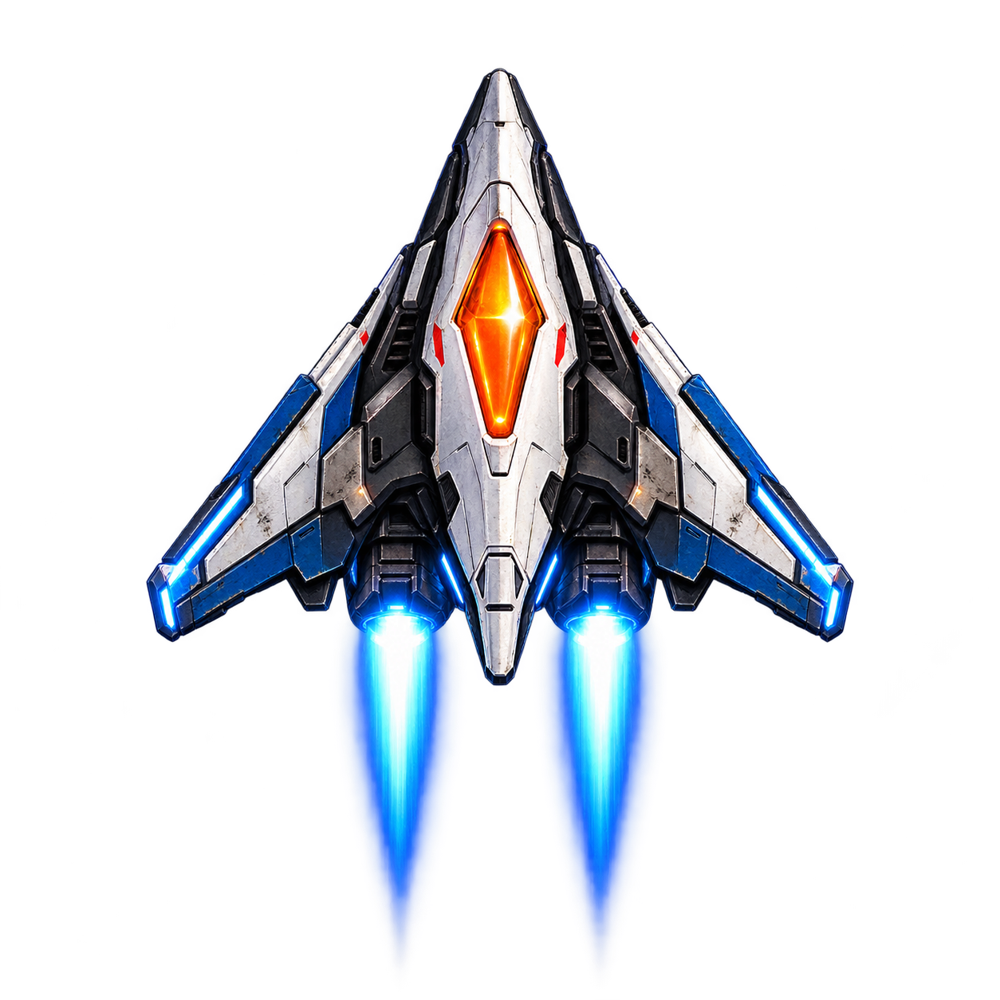
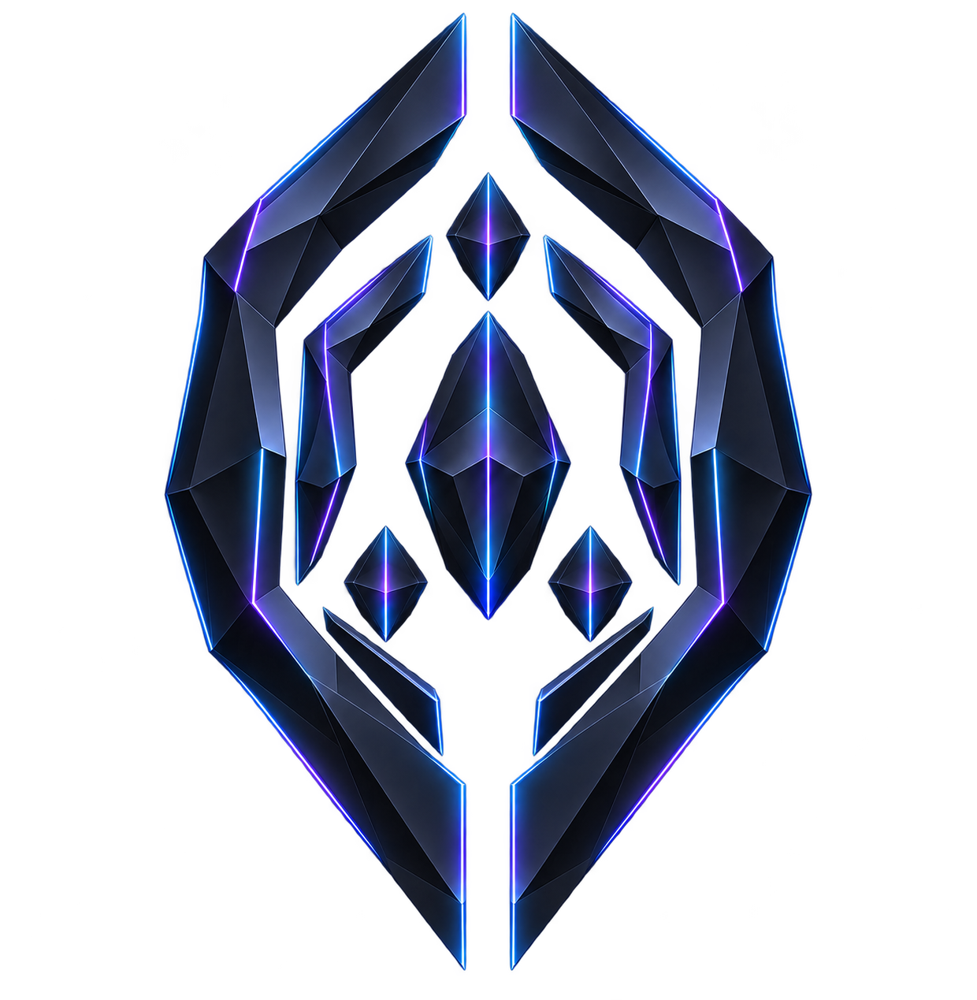
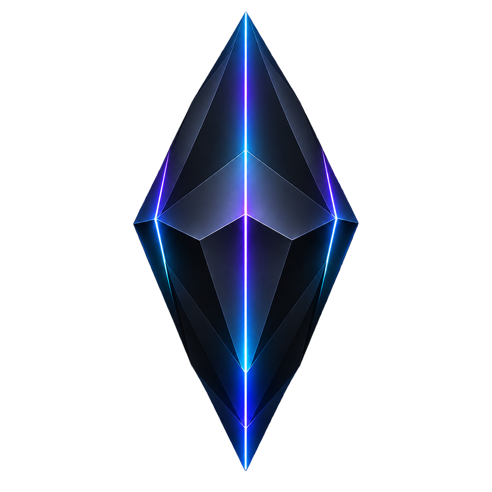
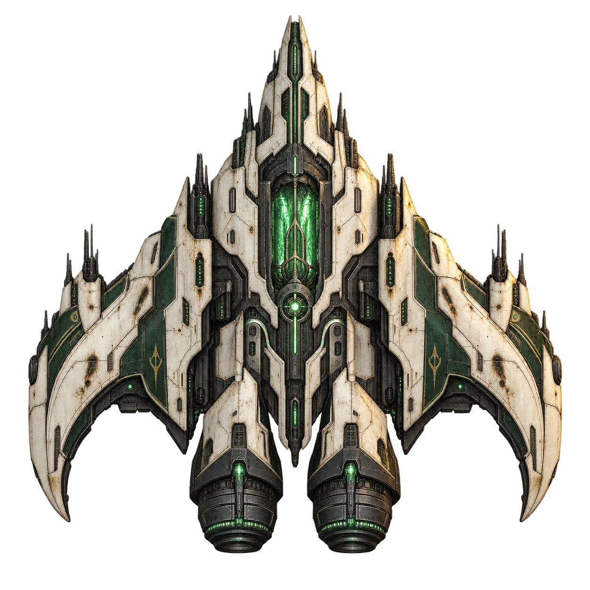

Корабль игрока
Player Interceptor
Корабль Andygen: точное управление и главный силуэт игрока.
От солнечной обороны Mercury до чужой флотилии Neptune. Корабли, объекты, их роли и оригинальные изображения.

Корабль Andygen: точное управление и главный силуэт игрока.
Солнечная оборона Helios
Облака, маскировка и помехи


Ударный корабль. Кислотный след — специальная способность, которую ещё предстоит реализовать в игре.

Защита, глушение и ложные контакты. Echo Jammer — функция этого класса; перенос помех с корпуса Striker требуется в игре.

Атмосферный перехватчик: облачная маскировка, ложные контакты и молнии. Настоящую цель выдают вспышки двигателей; после перегрузки открывается ядро.
Орбитальная оборона
Промышленная сеть и сборочные машины


Ремонтный аппарат: восстанавливает недавно уничтоженного тяжёлого противника.

Начальное состояние фабрики-босса: четыре манипулятора, центральный пресс и сборочные ячейки. Чужой управляющий модуль пока скрыт.
Штормовые машины и атмосферные ретрансляторы
Чужая геометрия и первый боевой контакт


Три узла со световыми связями. Единый статический PNG формации; отдельные узлы не выделены.

Кольцевой мобильный control-node с тонкой сеткой захвата. Световые связи включены в PNG.

Закрытый объект для сканирования, а не уничтожения. Внешность — художественная интерпретация сценарного описания.

Раздельные чёрные плоскости и пустой центр. Статический корпус первой фазы; последующие состояния и эффекты пространственного смещения в набор не входят.
Shard, Lattice и Assimilator принадлежат общей чужой флотилии Uranus / Neptune и используют одни и те же изображения. Распределение по миссиям этим каталогом не задаётся.
Чужая флотилия и командный флагман


Три узла со световыми связями. Единый статический PNG формации; отдельные узлы не выделены.

Кольцевой мобильный control-node с тонкой сеткой захвата. Световые связи включены в PNG.

Тяжёлый чужой эскорт: широкий плоский корпус без кабины, видимых двигателей и обычных пушек.

Командный флагман Emissary. Начальная закрытая конфигурация с вложенными рамками; далее раскрываются узлы интеграции и отделяется command-seed.

Раскрытая конфигурация: три видимых узла вокруг командного ядра. Рамки и узлы объединены в один PNG.

Отделившееся командное ядро для сцены ухода. Показано крупно для детализации; это часть финальной фазы Integration Ark, а не новый тип босса.
Shard, Lattice и Assimilator принадлежат общей чужой флотилии Uranus / Neptune и используют одни и те же изображения. Распределение по миссиям этим каталогом не задаётся. Фазы Integration Ark — отдельные статические изображения: перед анимацией переходов нужно согласовать их масштаб и точку привязки.
Корабль Andygen — Player Interceptor. Mercury: Mercury Scout, Mercury Striker, Mercury Guard; босс — Helios Warden. Venus: Venus Scout, Venus Striker, Venus Guard; босс — Veil Hunter. Номера MRC — только технические обозначения.
Выход из облаков — поведение Venus Scout. Кислотный след — специальная способность Venus Striker; в игре пока не реализована.
Echo Jammer («постановщик помех») — функция Venus Guard, а не отдельный класс корабля. Guard отвечает за защиту, глушение и ложные контакты.
Требуется в игре: перенести функцию постановщика помех с корпуса Striker на Guard, привести глушение Guard и названия в HUD, целях и репликах к этому составу. Код игры находится вне этого репозитория; здесь обновлены Bible и сценарные источники.
Earth: Earth Scout, Earth Striker, Earth Guard; босс — Aegis Citadel. Mars: Mars Scout, Mars Striker, Mars Guard, ремонтный аппарат Mars Repair Unit; босс — Assembler Prime. Опубликованный PNG Assembler Prime показывает только фазу 1.
Ранние варианты сохранены для истории разработки.

Выведен из действующего состава. Единственный босс Венеры — Veil Hunter.

Storm Lancer: архивная идея электрического линейного выстрела с предупреждающей световой дорожкой. Не отдельный класс действующего состава; способность не закреплена за текущими кораблями.


{kind=link}
{kind=link}
{kind=link}
{kind=link}